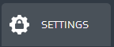
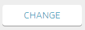
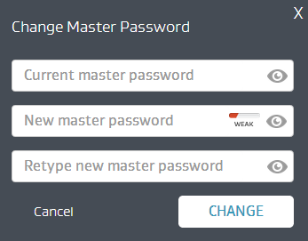
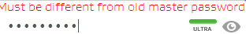

import AVGME_common as AM_common reload(AM_common) test_case_id="AM-208" def AM_WebApp_ChangeMasterPassword_238(log_file): Settings=() Change=() MasterMenu=() Current=() Eye1=(Pattern().targetOffset(136,-2)) CurrrentAccepted=() CurrentShown=() Old=() New=() NewAccepted=() Eye2=(Pattern().targetOffset(138,-2)) NewShown=() Retype=() RetypeRejected=() RetypeAccepted=() Eye3=(Pattern().targetOffset(142,-2)) RetypeShown=( ) ChangeBlue=() OldPass="US!pf.avg" NewPass="avg123avg" click(AM_common.redicon) wait(4) if exists(Settings): click( Settings) AM_common.verify(log_file,Change) click(Change) AM_common.verify(log_file,MasterMenu) AM_common.verify(log_file,Current) click(Current) type(OldPass) AM_common.verify(log_file,CurrrentAccepted) click(Eye1) AM_common.verify(log_file,CurrentShown) AM_common.verify(log_file,New) click(New) type(OldPass) AM_common.verify(log_file,Old) click(Old) type("a", KEY_CTRL) type(NewPass) AM_common.verify(log_file,NewAccepted) click(Eye2) AM_common.verify(log_file,NewShown) AM_common.verify(log_file,Retype) click(Retype) type("mscott0380") AM_common.verify(log_file,RetypeRejected) click(RetypeRejected) type("a", KEY_CTRL) type(NewPass) AM_common.verify(log_file,RetypeAccepted) click(Eye2) AM_common.verify(log_file,RetypeShown) AM_common.verify(log_file,ChangeBlue) click(ChangeBlue) #Function_call if __name__ == "__main__": log_file = "" try: script_path, test_case_script_name=os.path.split(sys.argv[0]) test_case_script_name=test_case_script_name + ".sikuli" log_file=AM_common.create_log_folder(test_case_script_name, test_case_id) AM_common.InstallExtention(log_file) AM_common.LoginTOApp(log_file) AM_WebApp_ChangeMasterPassword_238(log_file) AM_common.delItem(log_file) AM_common.PassCase(log_file, test_case_id) except FindFailed, f: msg = "Find Failed Exception: %s " % f AM_common.write_log(log_file,msg) AM_common.FailTestCase(log_file, test_case_id) except Exception, e: msg = "Exception detected: %s " % e print "exception" AM_common.write_log(log_file,msg) AM_common.FailTestCase(log_file, test_case_id)